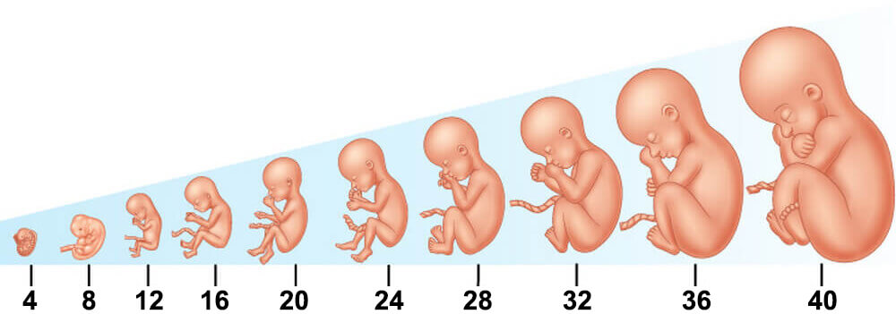

حساب اسابيع الحمل من الأسبوع الأول حتى الأسبوع الأربعين باستخدام حاسبة الحمل بالاسابيع الإلكترونية التي تدعم التاريخ الميلادي والتاريخ الهجري.
Pregnancy Calculator in Weeks
برنامج حساب الحمل بالاسابيع بالعربي
كثير من النساء تتساءل كيف احسب موعد ولادتي ولذلك قمنا بعمل برنامج حساب الحمل بالاسابيع بالعربي والذي يتيح للمرأة الحامل الوصول إلى جدول حساب الحمل الخاص بها والذي يتكون من اربعين اسبوعاً وعرض كم كبير من المعلومات المهمة التي سوف تطرأ على الحمل خلال هذه الأسابيع الاربعين سواء بما يخص الجنين أو ما يخصك إنتِ كمرأة حامل.
1. اسبوع الحمل الأول
في الأسبوع الأول من الحمل يجب على الحامل البدء في اتباع نظام غذائي صحي مناسب لصحتها وصحة جنينها، والتركيز على الاغذية الغنية بالفيتامينات، بالاضافة إلى الابتعاد عن المنبهات التي تحتوي على الكافيين والابتعاد ايضاً عن الأغذية التي تحتوي على المواد الحافظة لما لها من اثر سلبي على صحة الحامل وصحة جنينها، وفي حال كانت المرأة تتناول أدوية معينة قبل فترة الحمل فيجب مراجعة الطبيب للتأكد من أن هذه الأدوية لا تؤثر على المرأة الحامل أو على جنينها، وايضاً لا يجب اهمال الصحة النفسية فيجب الابتعاد عن الأمور التي تسبب الضغوط النفسية أو الانفعالات.
2. اسبوع الحمل الثاني
في الأسبوع الثاني من الحمل تبدأ علامات الحمل بالظهور واهم علامة للحمل هي غياب الدورة الشهرية عن المرأة الحامل ( فترة الطمث) ويصاحب هذا الغياب شيء من الإكتئاب، وضعف عام في الجسم بالاضافة للشعور في الاعياء والتقيؤ والغثيان في بعض الأحيان، بالاضافة الى التبول بشكل متكرر اكثر من المعتاد.
3. اسبوع الحمل الثالث
في الأسبوع الثالث من الحمل يحدث العديد من التغيرات في الرحم فينمو كيس حول الجنين ويتحول جزء منه إلى ما يعرف (بالمشيمة) والتي بدورها تقوم بنقل الغذاء من جسد الأم إلى الجنين وتقوم ايضاً باخراج الفضلات من الجنين، ويتشكل سائل داخل كيس لينتشر حول الجنين لحمياته اثناء نموه في داخل رحم الأم، ومن التطورات التي تحدث في هذا الاسبوع هو نمو دماغ الجنين وحبله الشوكي وقلبه وجهازه الهضمي ايضاً.
4. اسبوع الحمل الرابع
في الأسبوع الرابع من الحمل يستمر تكون أعضاء الجنين بشكل مبدأي فسوف يبدأ الوجه بالتكون مبدئياً وايضاً سوف تنشأ الدوائر السوداء لأعين الجنين بالاضافة الى تكون الفك السفلي والحلق والفم للجنين.
5. اسبوع الحمل الخامس
في الأسبوع الخامس من الحمل تبدأ اعراض الحمل في الازداد فهذا الاسبوع يعتبر بداية الشهر الثاني من الحمل وسوف تبدأ الاعراض بالتصاعد شيئياً فشيئاً ومن هذه الأعراض شعور الحامل بالغثيان بالاضافة إلى الم في الثديين يصاحبه أحياناً سواد حول الحلمات كمان تظهر الرغبة المتكررة في التبول خاصة في فترة الليل.
6. اسبوع الحمل السادس
في الأسبوع السادس من الحمل يستمر تطور وتشكل الجنين وتظهر العديد من التطورات ومنها بروز اطراف الجنين وبراعم عينيه، وسيبدأ الفم مع الأنف مع الأذنين في النمو والتكون، ظهور برعم انسجة تشكيل الرئتين، بالاضافة الى استمرار النمو في المخ وفي الأمعاء الخاصة بالجنين.
7. اسبوع الحمل السابع
في الأسبوع السابع من الحمل يجب اتباع تغذية سليمة وأكل وجبات صحية ولا تتركي مجال لأن تكون معدتك فارغة لوقت طويل واحرصي على تناول وجبات غذائية خفيفة وصحية بين الوجبات الاساسية، فانتِ الآن تحملين روحاً في اخرى في جسدك ويجب عليكِ الاهتمام بصحتك الغذائية، وفي حال شعورك في أي اعراض غير طبيعية كالنزيف أو الالم الحاد في البطن قومي باستشارة الطبيب فوراً.
8. اسبوع الحمل الثامن
في الأسبوع الثامن من الحمل سوف تلاحظين ان هناك ازدياد ملحوظاً في وزنك نتيجة لتطور الجنين، وتكون الزيادة بحوالي 2 كغم أو اكثر أو اقل بقليل، وينتج عن ذلك ايضاً تمدد وتوسع لحمك لكي يستوعب الجنين والتطور الذي يطرأ عليه، وايضاً قد تشعرين في نمو بحجم الثديين وسوف تقومين بتغيير مقاسات حمالات الصدر الخاصة بكِ، بالاضافة إلى انه قد يصاحب هذا النمو في الثديين بعض الألم.
9. اسبوع الحمل التاسع
في الأسبوع التاسع من الحمل تبدأ الأربع غرف التي تكون قلب الجنين بالتشكل وتبداً صمامات القلب بالتكوين، وهنا يبدأ تكون الأسنان الصغيرة بالاضافة إلى اختفاء الذيل الجنيني الذي تكون سابقاً، وسيبدأ الجنين بالركل باستخدام عضلاته واعصابه الصغيرة.
10. اسبوع الحمل العاشر
في الأسبوع العاشر من الحمل يبدأ تطور ونمو أنسجة وخلايا واعضاء الجنين بشكل أسرع، ويعمل لدى الجنين الآن الدماغ والكلى والأمعاء والكبد، ويقوم الكبد في تكوين خلايا الدم الحمراء والتي بدورها سوف تستمر في التطور طيلة فترة حملك، وينمو الشعر الناعم على جلد الجنين، ويظهر بوضوح شكل العمود الفقري للجنين من خلال جلده الشفاف.
11. اسبوع الحمل الحادي عشر
في الأسبوع الحادي عشر من الحمل سيكون شعورك بالغثيان أقل من السابق وستشعرين بأنكِ أكثر نشاطاً وحيوية من الأسابيع السابقة أيضاً، وربما يحدث لديكِ في هذه الفترة الشعور بالإمساك وذلك نتيجة للتغيرات الهرمونية في جسدك والتي سوف تجعل عملية هضم الطعام أكثر بطء، قد تتحول بشرتك في هذه الفترة إلى بشرة ذهنية وقد يظهر عليها حب الشباب، ومن الأمور الجيدة في هذه الفترة انه سوف تلاحظين نمو اسرع وافضل لشعرك واظافرك.
12. اسبوع الحمل الثاني عشر
في الأسبوع الثاني عشر من الحمل يستمر التطورفي جميع اجزاء الجنين فالاسنان تتطور والعظام أيضاً تبدأ بالتصلب على الرغم من أن تصلب العظام ياخد وقت طويلاً، وتتكون اذني الجنين وتصبح بارزة، ويبدأ تكون اليدين واصابع اليدين وايضاً يبدأ تكون القدمين واصابع القدمين.
13. اسبوع الحمل الثالث عشر
في الأسبوع الثالث عشر من الحمل يحدث العديد من التغيرات والتطورات في داخل رحم الأم فينمو كيس حول الجنين ويتحول جزء من هذا الكيس إلى المشيمة التي تقوم بدورها بنقل الغذاء من الام الى الجنين وايضاً تنقل الفضلات من الجنين، ويتجمع سائل داخل هذا الكيس حول الجنين ليقوم بحمايته طيلة فترة نموه داخل رحم الأم.
14. اسبوع الحمل الرابع عشر
في الأسبوع الرابع عشر من الحمل يبدأ الثلث الثاني من الحمل ويكون هذا الأسبوع من الأسابيع التي ستشعر فيها الحامل بالراحة إلى حد كبير، وتكون قد تلاشت الكثير من الأعراض التي كانت تزعج الحامل في الثلث الأول من الحمل، ويستمر الجنين بالنمو والتطور في هذا الاسبوع فتنتقل اذني الجنين من منطقة الرقبة إلى جانبي رأسه، ويزداد طول رقبته وتصبح ذقنه أكثر وضوحاً، وتتشكل هنا ملامح وجه الجنين وبصمات أصابعه.
15. اسبوع الحمل الخامس عشر
في الأسبوع الخامس عشر من الحمل قد تواجه الحامل نزيف في الانف وذلك نتيجة التغيرات الهرمونية التي تحصل على جسدها ونتيجة ازدياد تدفق الدم في الاعوية الدموية، وسوف تلاحظ الأم ان البطن أصبح بارز بشكل كروي أكثر من قبل.
16. اسبوع الحمل السادس عشر
في الأسبوع السادس عشر من الحمل سيزداد الدم في جسد المرأة الحامل من أجل تغذية الجنين وقد يحدث نزيف في الانف احياناً نتيجة هذا الإزدياد في الدم، وستلاحظ المرأة ان الأوردة تحت الجلد اصبحت بارزة وواضحة في القدمين نتيجة هذه الزيادة في الدم ايضاً، وسيقل في هذه المرحلة الغيثان أو حتى قد يختفي تماماً، وستقل الحاجة إلى التبول ويقل التعب والارهاق بشكل عام.
17. اسبوع الحمل السابع عشر
في الأسبوع السابع عشر من الحمل لا بد من التركيز على سلامة المرأة الحامل وسلامة جنينها وذلك من خلال الإلتزام ببعض النصائح، فيجب تغيير وضعية الجسم بشكل سلس وببطء ويجب ايضاً الإستلقاء على السرير أو الجلوس على الأريكة في حال الشعور بالغثيان أو الدوار، لا يجب الوقوف لأوقات طويلة لأن ذلك سوف يسبب الماً في القدمين، ولا يجب ارتداء أي احذية ذات كعب عالي، يجب الحرص على ارتداء الأحذية المريحة دائماً، يجب ان يكون هناك حرص شديد على البطن بحيث لا يتعرض لأي كدمات أو صدمات لأن ذلك يشكل خطر على المرأة الحامل وعلى جنينها بنفس الوقت.
18. اسبوع الحمل الثامن عشر
في الأسبوع الثامن عشر من الحمل تكون بداية تشكل الغطاء الواقي لأعصاب الجنين وسوف تستمر هذه العملية إلى ما بعد ولادة الطفل واتمام عامه الأول، ويبداً في هذا الأسبوع ايضاً تطور براعم التذوق لدى الجنين ليصبح بامكانه التفريق بين الطعم المر من الطعم الحلو، وتصبح الأوعية الدموية الخاصة بالجنين مرئية من خلال جلده وتكون قد اصبحت اذنيه في وضعها النهائي، وفي حال كان الجنين ذكر فان اعضاءه التناسلية سوف تبدأ بالوضوح واذا كان انثى فسوف تبدأ قنوات فالوب بالتشكل الآن.
19. اسبوع الحمل التاسع عشر
في الأسبوع التاسع عشر من الحمل تظهر العديد من الأعراض الجديدة مثل الألم في اسفل البطن وربما الشعور احياناً بالدوار، يمكن ان تعاني المراة من تشنج في الساقين نتيجة زيادة الوزن في هذه الفترة، شعور بالحموضة في المعدة وربما المعاناة من الأمساك، اما القدمين والكاحلين فقد يحدث بهما تورم خفيف، وقد تشعر المرأة ايضاً بالم آخر في الظهر.
20. اسبوع الحمل العشرين
في الأسبوع العشرين من الحمل يصبح من السهل قياس وزن وطول الجنين فالوزن سيكون تقريباً 300 جرام بينما الطول سيكون تقريباً حوالي 16.4 سم، ويبدأ الجنين في هذا الوقت بامر جيد لجهازه الهضمي وهو عملية الإبتلاع، وسوف ينتج الجنين مادة هضم سوداء ولزجة تسمى العُقي تتراكم في امعائه ويتخلص منها الجنين عادة بعد الولادة عن طريق البراز وبعض الاجنة ربما يتخلصون منها مع الفضلات في رحم الأم.
21. اسبوع الحمل الحادي والعشرين
في الأسبوع الحادي والعشرين من الحمل تختفي معظم اعراض الحمل المزعجة وحجم بطن المرأة الحامل لا يكون كبيراً بشكل كبير، فيمكن للمرأة الحامل الإستمتاع بالراحة في هذا الأسبوع، اما الجنين سيكون طوله حوالي 26.7 سم ووزنه حوالي 360 غرام، ستشعرين بالتحركات القوية لجنينك، ورئية الركلات القوية، وستتكون حواجب وجفون الجنين في هذا الاسبوع ايضاً، وفي حال كان جنينك انثى فانه سوف يبدأ المهبل بالتكون في هذه المرحلة.
22. اسبوع الحمل الثاني والعشرين
في الأسبوع الثاني والعشرين من الحمل يستمر الازدياد في حجم البطن ويزداد معه ايضاً حجم الثديين مع اختفاء اعراض الحمل التي رافقتك بالاسابيع السابقة كالغثيان، وستشعرين بتورم في الكاحل والقدم وتشنجات بالساقين نتيجة ازدياد وزنك، ولتخفيف تشنج الساقين عليكِ زيادة تناول الاغذية التي تحتوي على الكالسيوم والبوتاسيوم مثل الحليب والبرتقال والموز.
23. اسبوع الحمل الثالث والعشرين
في الأسبوع الثالث والعشرين من الحمل يزداد وزن الجنين وطوله حيث ويصبح وزنه حوالي 501 جرام بينما طوله قرابة 28.9 سم، وسوف تختلف محدودة حركة الجنين حسب وضعه بالنسبة للمشيمة، فاذا كانت المشيمة بمقدمة الرحم فانه من الممكن ان تقييد حركة الطفل وتحد منها.
24. اسبوع الحمل الرابع والعشرين
في الأسبوع الرابع والعشرين من الحمل يستمر الأزدياد في وزن وطول الجنين بحيث سوف يصبح وزنه ما يقارب 600 جرام وطوله سيكون حوالي 30 سم، وبهذا الحجم يكون الجنين اصبح يملأ الرحم بشكل كامل، وستلاحظ الأم ان الجنين يكون عادة مستيقظ ويتحرك عندما هي تحاول الخلود للنوم وعلى الرغم من ذلك فان اوقات نوم واستيقاظ الجنين سوف تنتظم نوعاً ما في هذه المرحلة.
25. اسبوع الحمل الخامس والعشرين
في الأسبوع الخامس والعشرين من الحمل شعر الحامل يصبح أكثر كثافة وجمال بسبب التغيرات الهرمونية التي تعمل على منع التساقط الطبيعي للشعر في هذه المرحلة وذلك كون الشعر الإضافي سوف يعود للتساقط بعد فترة الولادة، سوف تصبح الحامل ايضاً في هذه المرحلة اقل رشاقة وستكون حركتها صعبة نوعاً ما لذلك ينصح بممارسة الرياضة المناسبة للحمل بعد استشارة الطبيب على ان تتوقف المرأة عن ممارسة الرياضة في حال شعورها بالارهاق أو الدوار او أي ضيق في النفس ويجب ايضاً الإكثار من شرب المياه والسوائل.
26. اسبوع الحمل السادس والعشرين
في الأسبوع السادس والعشرين من الحمل لايزال وزن وطول الجنين في ازدياد مضطرد فوزنه سيكون حوالي 760 جرام بينما طوله سيكون حوالي 35.6 سم، يتسارع نمو العمود الفقري للجنين ويدعم ثقل جسده، تطور الاعصاب وحساسية الاذن لدى الجنين فهو الآن سيكون لديه القدرة على الإستماع لصوت الأم، تتطور الرئتين لدى الجنين ويبدأ بعمل حركات الشهيق والزفير عن طريق السائل الذي يحيطه ويسمى هذا السائل باسم (السائل الأمينوسي) فهذه الحركات بمثابة تدريب على التنفس للجنين ليكون مستعد لذلك وقت الولادة.
27. اسبوع الحمل السابع والعشرين
في الأسبوع السابع والعشرين من الحمل تستمر الزيادة في وزن وطول الجنين بشكل طبيعي وسيكون وزنه حوالي 875 غم وطوله حوالي 36.5 سم من اخمص قدميه حتى رأسه، وتتطور عضلاته وسوف تكون لديه القدرة على فتح وغلق عينيه بالاضافة لتشكل الشعر والرموش والحاجبين.
28. اسبوع الحمل الثامن والعشرين
في الأسبوع الثامن والعشرين من الحمل يستمر حجم الرحم بازدياد مما ينتج عنه زيادة في حجم خصر المرأة حوالي 1 سم كل اسبوع مما يسبب عدم الراحة للأم وذلك أمر طبيعي وسيكون الرحم على ارتفاع يقارب 7 سم من سرة بطن الأم.
29. اسبوع الحمل التاسع والعشرين
في الأسبوع التاسع والعشرين من الحمل يستمر تطور دماغ الجنين ويكبر حجم الرأس نتيجة هذا التطور في الدماغ، وسيكون دماغه في هذه المرحلة قادر على السيطرة على درجة حرارة جسمه ويمكنه تحديد بعض حركات الام كالتنفس، ويكون قادر على تمييز الأصوات بشكل اوضح من السابق، وستصبح حركة الطفل أكثر شدة من ذي قبل فقد تشعر الام بقوة دفعاته وركلاته، وفي الغالب ستكون وضعية رأس الجنين إلى اعلى في هذه الفترة.
30. اسبوع الحمل الثلاثين
في الأسبوع الثلاثين من الحمل يستمر توسع وتمدد رحم الام ليصل حوالي 10 سم فوق سرة البطن في هذه الفترة، اما وزن الحامل فهو في ازياد مستمر ايضاً فحوالي نصف هذا الوزن الزائد يكون من نصيب وزن الجنين والمشيمة والسائل المحيط بالجنين والذي يسمى سائل الأمينوسي.
31. اسبوع الحمل الحادي والثلاثين
في الأسبوع الحادي والثلاثين من الحمل تستمر الزيادة في وزن وطول الجنين ليبلغ طوله حوالي 41.1 سم بينما يبلغ وزنه حوالي 1.5 كغم، ويبدأ الشعر الناعم بالتساقط ويسمى هذا الشعر باسم الزغب أو (لانوغو)، وسوف تؤثر الأطعة التي تتناولها الأم على السائل المحيط بالطفل والذي يسمى بالسائل الامينوسي بحيث سيصبح هذا السائل بنكهة تلك الاطعمة وستكون حاسة التذوق لدى الجنين ناضجة ليتذوق هذه النكهات.
32. اسبوع الحمل الثاني والثلاثين
في الأسبوع الثاني والثلاثين من الحمل يجب ان تقوم الام بعمل زيارات اسبوعية للطبيب المختص بالحمل، وستسمر معاناة الام مع الام اسفل الظهر والتشنج في الرجلين، وسيحدث تسرب لسائل لونه اصفر من الثديين يسمى اللبأ وهذا مؤشر على استعداد الأم للرضاعة الطبيعية، وينصح ايضاً بالاكثار من شرب الماء والسوائل والنوم على الجنب الأيسر وينصح برفع الساقين عند الجلوس.
33. اسبوع الحمل الثالث والثلاثين
في الأسبوع الثالث والثلاثين من الحمل سيبدأ الجنين بملئ مساحة بطن الأم بالكامل تقريباً وذلك سوف يسبب تغيير في الطريق التي تمشي فيها الام وسيحصل لديها القليل من التمايل اثناء سيرها، وسوف تجد الأم صعوبة في الجلوس أو النوم بوضعية مريحة في هذه الفترة.
34. اسبوع الحمل الرابع والثلاثين
في الأسبوع الرابع والثلاثين من الحمل يتطور الجنين أكثر فاكثر وتصبح قوقعة اذنه أكثر نضجاً ويمكنه بسهولة التعرف على صوت امه، وبعض الدراسات العلمية تقول بانه لو كانت الام تغني اغنية معينة في هذه الفترة قبل الولادة فسوف يعتاد عليها الجنين ويهدأ عندما يسمعها بعد الولادة وهذا الأمر سوف يزيد من الترابط العاطفي بين الأم وطفلها، وسوف تصبح البشرة لدى الجنين أكثر نعومة من السابق وسيميل لونها إلى اللون الوردي بدلأ من الاحمرار.
35. اسبوع الحمل الخامس والثلاثين
في الأسبوع الخامس والثلاثين من الحمل يستمر رحم الام بالتوسع ليمتد حوالي 15 سم فوق السرة، وستعاني نتيجة ذلك الأم من حرقة في معدتها وبعض المشاكل في جهازها الهضمي بالاضافة إلى الزيادة الملحوظة في الرغبة في التبول وهذه الأمور طبيعية وليست مدعاة للقلق، ويجب أن لا تنسى الأم مراجعة طبيبها بشكل اسبوعي للإطمئنان على صحتها وصحة طفلها.
36. اسبوع الحمل السادس والثلاثين
في الأسبوع السادس والثلاثين من الحمل يكون الحمل قد اصبح كامل والطفل على استعداد لأن يولد في أي لحظة ابتداء من انتهاء هذا الأسبوع وحتى الأسبوع الثاني والأربعين، وفي هذا الاسبوع ايضاً يواصل الطفل القيام بعملية التخلص من الشعر الناعم وايضاً يبدأ بالتخلص من الطبقة الواقية التي تغطي بشرته والتي تعرف باسم الغطاء الجيني تمهيداً للولادة.
37. اسبوع الحمل السابع والثلاثين
في الأسبوع السابع والثلاثين من الحمل قد يكون هناك ازدياد في الإفرازات المهبلية لدى المرأة الحامل ولا داعي للقلق بسبب هذه الإفرازات فهذا أمر عادي، واذا لاحظت المرأة وجود المخاط الذي يحتوي على بعض الدماء في المرحاض أو في الملابس الداخلية فهذا يعتبر مؤشر على قرب موعد الولادة، ويجب على المرأة في هذه المرحلة القيام بعمل فحص البكتريا العقدية B والتأكد بان النتيجة ايجابية.
38. اسبوع الحمل الثامن والثلاثين
في الأسبوع الثامن والثلاثين من الحمل قد تعاني الحامل من التورم الطفيف في القدمين وهذا أمر عادي ولا يثير القلق، اما اذا كان التورم في القدمين أو الكاحلين غير عادي ومبالغ فيه فانه من الضروري مراجعة الطبيب فوراً، وايضاً في حال اصابة الحامل بصداع قوي أو تشوش في الرؤية أو حساسية مفرطة من الضوء فيجب مراجعة الطبيب فورأً ايضاً خوفاً من ان تكون هذه اعراض اصابة بتسمم الحمل الخطير.
39. اسبوع الحمل التاسع والثلاثين
في الأسبوع التاسع والثلاثين من الحمل تشعر الحامل بعدم الراحة وصعوبة في الحركة بسبب الضخامة وكبر الحجم التي وصل اليها بطنها، ويتم في هذه الفترة فحص توسع عنق الرحم من قبل الطبيب المشرف، وايضاً يجب مراقبة حركات الجنين من قبل الام فاذا شعرت الام بانخفاض في حركات الجنين يجب عليها مراجعة الطبيب المشرف على حملها فوراً لان انخفاض حركة الجنين وتباطئها قد ينذر بوجود مشكلة.
40. اسبوع الحمل الأربعين
في الأسبوع الأربعين من الحمل يكون قد حان موعد الولادة وعلى الحامل أن تنتبه لعلامات الولادة في هذه الفترة، ربما تتأخر الولادة اسبوعان فمن الممكن أن يستمر الحمل حتى الاسبوع الثاني والأربعين فلا مشكلة في ذلك، ويجب أيضاً مراقبة حركات الجنين والتأكد بانه يتحرك بشكل نشط في هذه الفترة، وسيكون من الصعب على الحامل النوم جيداً في هذا الأسبوع.
حساب أسابيع الحمل بالصور
تسأل العديد من النساء كم اسبوع في الحمل؟ ان عدد اسابيع الحمل المتعارف عليه هو 40 اسبوع أي ما يعادل 280 يوم ويعادل ايضاً 9 أشهر، ويمكن ببساطة التعرف على اسابيع الحمل بالاشهربحيث أن كل شهر يحتوي على اربعة اسابيع وهذه الاسابيع ليست ارقام فحسب لكن يمكن من خلالها تتبع نمو وتطور الجنين والحصول على نصائح هامة لكل اسبوع حسب ما تم ذكرها سابقاً في هذه الصفحة وفيما يلي حساب أسابيع الحمل بالصور التي تظهر الجنين من الاسبوع الاولى حتى الاسبوع الاربعين:
